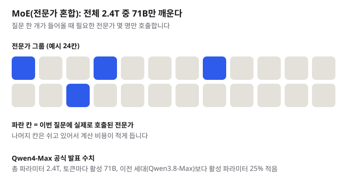
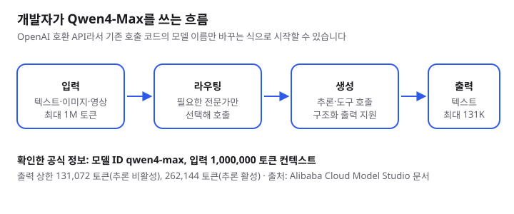

Qwen4-Max: 100만 토큰을 읽는 알리바바의 새 모델, 입문 개발자가 알아야 할 것
- 알리바바 클라우드가 2026년 11월 16일 Qwen4-Max를 정식 공개했고, 11월 11일부터 있던 제한 공개(프리뷰)를 마쳤습니다.
- 입력 컨텍스트가 100만 토큰이고 텍스트·이미지·영상을 받으며, 전문가 여러 명 중 필요한 일부만 깨우는 MoE 구조로 계산 비용을 줄였다고 설명합니다.
- 가중치 공개(오픈 웨이트)는 Max에는 없고 더 작은 Qwen4 모델부터 나중에 풀린다고 해서, 입문자는 API로 먼저 써 보는 것이 현실적입니다.
11월 중순 중국 빅테크들이 잇달아 새 모델을 내놓는 가운데, 알리바바의 Qwen4-Max는 "긴 문서를 한 번에 읽고, 일을 끝까지 해내는 모델"이라는 메시지로 개발자 사이에서 주목받았습니다. 특히 입력 컨텍스트가 100만 토큰이라는 점과 API 가격 인하가 함께 언급되면서, 긴 코드베이스나 문서를 다루는 개발자들의 관심이 몰렸습니다.
01한눈에 보기
Qwen4-Max를 큰 도서관에 비유하면 이해가 쉽습니다. 도서관에는 전문 사서가 총 2.4조 개 파라미터 규모로 많이 있지만, 질문 한 개가 들어올 때 그중 관련 있는 사서 몇 명(토큰마다 약 71B)만 불러서 답을 맞힙니다. 모든 사서를 매번 부르지 않으니 같은 규모의 모델을 전부 돌리는 것보다 계산이 가볍습니다. 그리고 한 번에 펼쳐 볼 수 있는 책의 분량, 즉 컨텍스트는 100만 토큰으로 넓습니다.

· 토큰: 모델이 읽고 쓰는 글자 조각입니다. 한글은 보통 영어보다 토큰을 더 많이 씁니다.
· 컨텍스트 길이: 한 번의 요청에 넣을 수 있는 입력 분량의 상한입니다.
· 오픈 웨이트: 학습된 가중치 파일을 누구나 내려받아 자기 서버에서 돌릴 수 있게 공개하는 방식입니다.
02어떻게 동작하나요
개발자 입장에서 흐름은 단순합니다. 텍스트, 이미지, 영상 중 하나 이상을 입력으로 넣으면 모델 안에서 필요한 전문가가 골라지고, 텍스트 답변이 나옵니다. 공식 문서 기준으로 입력 최대치는 991,808토큰(사고 모드에서는 983,616토큰)이고, 출력은 사고 모드를 끈 상태에서 최대 131,072토큰, 켠 상태에서 최대 262,144토큰입니다. 호출 방식은 OpenAI Chat Completions, OpenAI Responses, Anthropic Messages 형식을 지원해서, 기존에 쓰던 SDK에서 모델 이름을 바꾸는 정도로 시작할 수 있다고 문서에 적혀 있습니다. 함수 호출(도구 사용), 구조화 출력, 웹 검색, 캐시도 지원합니다.

03왜 지금 화제인가요
보도에서 강조된 부분은 가격과 에이전트 작업 비용이었습니다. 발표문은 Qwen4-Max가 이전 세대인 Qwen3.8-Max보다 활성 파라미터를 25% 적게 쓴다고 밝혔고, 자체 평가 기준인 Work360에서 작업당 평균 비용이 크게 줄었다고 설명했습니다. 독립 기관 수치를 인용한 eWeek는 Vals AI 지수에서 Qwen4-Max가 63.20%로 Qwen3.8-Max(59.05%)보다 높다고 전했습니다. 다만 이런 수치는 대부분 제작사나 평가 업체가 공개한 결과라서, 실제 프로젝트에 적용하기 전에 직접 돌려 보는 것이 안전합니다.
04관련 나라·기업
| 구분 | 이름 | 어떤 관련이 있나 |
|---|---|---|
| 기업 | Alibaba (알리바바 클라우드) | Qwen4-Max를 개발해 자사 클라우드 플랫폼 QwenCloud로 제공합니다. |
| 나라 | 중국 | 모델 개발 주체가 중국 기업이며, 호스팅 리전에는 베이징·싱가포르·미국·독일·일본·홍콩이 포함됩니다. |
05기존 방식과 무엇이 다른가
| 비교 항목 | 기존 (Qwen3.8-Max) | Qwen4-Max |
|---|---|---|
| 입력 컨텍스트 | 확인된 자료 없음 | 1,000,000 토큰 (공식 문서) |
| 활성 파라미터 | 기준 모델 | 25% 적음 (발표 수치) |
| 입력·출력 단가 | 입력 $2.00 · 출력 $6.00 (eWeek 달러 표기) | 입력 $1.50 · 출력 $4.50 (eWeek 달러 표기, 공식 문서는 위안화 표기) |
| 오픈 웨이트 | 없음 | 없음, 작은 Qwen4 모델은 예고 |
06직접 해 보기
아래 단계는 공식 문서(Alibaba Cloud Model Studio)에서 확인한 내용만 담았습니다. 실제 호출용 주소와 키 발급 화면은 제공사 콘솔 메뉴가 바뀔 수 있으니 문서를 따라가 주세요.
- Alibaba Cloud Model Studio(QwenCloud)에서 계정을 만들고 API 키를 발급받습니다. 공식 문서에는 무료 쿼터(100만 토큰, 90일 유효)가 있다고 나와 있습니다.
- 이미 OpenAI SDK를 쓰고 있다면 base URL과 키만 바꾸고, 모델 이름은
qwen4-max로 지정합니다. - 먼저 짧은 텍스트 질문 하나로 응답을 확인하고, 그다음 긴 문서를 넣어 컨텍스트 한도를 시험해 봅니다.
- 함수 호출이나 구조화 출력을 켜서, 모델이 JSON 형식으로 답하는지 확인합니다.
07주의할 점과 한계
- 가격 표기가 출처마다 다릅니다. 공식 문서의 베이징 리전 기준 입력 10위안, 출력 30위안(100만 토큰당)과 eWeek의 달러 표기(입력 1.50, 출력 4.50)가 서로 맞지 않습니다. 리전과 통화를 확인하고 콘솔의 과금 화면에서 최종 단가를 보세요.
- 오픈 웨이트가 아닙니다. 내 서버에 설치해 쓰는 로컬 LLM 용도로는 지금 당장 쓸 수 없습니다.
- 벤치마크는 제작사 발표 중심입니다. Code Arena 6위, Work360 비용 절감 같은 수치는 발표 자료 기준이라 실제 업무 성능과 다를 수 있습니다.
- 100만 토큰은 많아 보여도 비용이 빠르게 늘 수 있습니다. 긴 문서를 매번 통째로 넣으면 입력 토큰이 쌓이므로, 캐시와 필요한 부분만 넣는 방식을 함께 고려하세요.
- 중국 기업 모델이라 데이터 보관 위치와 규정을 확인해야 합니다. 회사 데이터를 넣기 전에 사내 보안 정책과 제공사 약관을 확인하세요.
08정리
Qwen4-Max는 "많이 읽고, 싸게, 끝까지 일하는" 모델을 목표로 한 발표입니다. 100만 토큰 컨텍스트와 MoE 구조, 텍스트·이미지·영상 입력이라는 조건은 공식 문서로 확인됐습니다. 반면 가격과 성능 수치는 출처마다 달라서, 입문 개발자라면 숫자를 믿기보다 짧은 실험으로 직접 비교하는 습관이 중요합니다.
처음 시작한다면 기존에 쓰던 OpenAI 호환 SDK에 모델 이름만 바꿔 끼워 보세요. 같은 질문을 두 모델에 던져 답과 비용을 나란히 적어 두면, 어떤 상황에 어떤 모델이 맞는지 스스로 판단하는 감각이 생깁니다.
09참고한 글
- Alibaba Unveils Qwen4-Max: New AI Teammate for Work, Creativity, and Discovery Alibaba Cloud 보도자료 · 2026.11.16 (공식)
- qwen4-max (Latest Model) Alibaba Cloud Model Studio 문서 · 2026.11.16 작성, 2026.11.17 갱신 (공식)
- Alibaba launches Qwen4-Max with lower API prices and a million-token context window TechNode · 2026.11.16
- Alibaba Launches Qwen4-Max: What's New and How Much It Costs eWeek · 2026.11.16
- Qwen4-Max: funktioner, benchmarkresultat, pris och åtkomst DataCamp · 2026.11.16 갱신